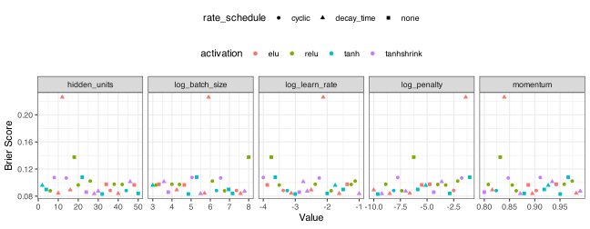

# fmt: skip
req_pkg <-
c("bestNormalize", "brulee", "embed", "mirai", "nnet", "probably",
"spatialsample", "tidymodels")
# Check to see if they are installed:
pkg_installed <- vapply(req_pkg, rlang::is_installed, logical(1))
# Install missing packages:
if (any(!pkg_installed)) {
install_list <- names(pkg_installed)[!pkg_installed]
pak::pak(install_list)
}18 Neural Network Classifiers
This chapter describes how to use neural networks.
18.1 Requirements
You’ll need 8 packages (bestNormalize, brulee, embed, mirai, nnet, probably, spatialsample, tidymodels) for this chapter:
Let’s load the meta package and manage some between-package function conflicts.
library(tidymodels)
library(spatialsample)
library(embed)
library(bestNormalize)
library(discrim)
library(important)
library(probably)
library(mirai)
tidymodels_prefer()
theme_set(theme_bw() + theme(legend.position = "top"))
daemons(parallel::detectCores())
# Some general settings for tuning classification models:
cls_mtr <- metric_set(brier_class, roc_auc, pr_auc, mn_log_loss)
ctrl_grid <-
control_grid(
save_pred = TRUE,
save_workflow = TRUE,
parallel_over = "everything"
)As before, we’ll load the objects that were already computed for the forestation data:
# "https://raw.githubusercontent.com/aml4td/website/main/RData/forested_data.RData" |>
# url() |>
# load()
load("~/content/website/RData/forested_data.RData")18.2 Neural Networks via Multilayer Perceptrons
There are several engines in tidymodels for fitting basic, feed-forward neural networks for classification: nnet, keras, brulee, and brulee_two_layer. The first three assume a single hidden layer. The focus here will be on using the brulee engine, as it offers the most options.
The parsnip package function for this model is mlp() and has main arguments:
-
hidden_units: the number of hidden units in the model. -
activation: the activation function (e.g.,"relu"). -
penalty: the amount of penalization. -
dropout: the proportion of model coefficients (i.e., weights) to set to zero during optimization. -
epochs: the number of full passes through the training set. -
learn_rate: the learning rate.
Please note that not all engines support all of these parameters. For example, the "net" engine cannot use epoch, dropout, learn_rate, or activation.
For brulee, there are a few helpful engine-specific arguments:
-
momentum: the number used to specify historical gradient information during optimization. -
batch_size: an integer for the number of training set points in each batch. -
class_weights: numeric class weights. Seebrulee::brulee_mlp()for more details. -
stop_iter: a non-negative integer for how many iterations with no improvement before stopping. (default: 5L). -
rate_schedule: A function to change the learning rate over epochs. Seebrulee::schedule_decay_time()for details. Possible values include:"decay_time","decay_expo","none","cyclic", and"step". -
optimizer: the optimization method. Some example values are:"SGD","ADAMw","Adadelta","Adagrad", and"RMSprop".
To demonstrate, we’ll train our model using the AdamW variant of stochastic gradient descent for a maximum of 25 epochs, but may stop early after five consecutive poor iterations.
Before fitting the model, some preprocessing is necessary. We will need to convert county into one or more numeric columns. We can use binary indicators; however, for demonstration purposes, a supervised effect encoding model is employed to generate a single column of values. After this, we use the orderNorm technique to transform our predictors to have the same standard normal distribution.
encode_rec <-
recipe(class ~ ., data = forested_train) |>
step_lencode_mixed(county, outcome = "class") |>
step_orderNorm(all_numeric_predictors())Our model specification will tune numrous parameters:
mlp_spec <-
mlp(
hidden_units = tune(),
penalty = tune(),
learn_rate = tune(),
epochs = 25,
activation = tune()
) |>
set_engine(
"brulee",
stop_iter = 5,
optimizer = "ADAMw",
rate_schedule = tune(),
batch_size = tune(),
momentum = tune()
) |>
set_mode("classification")
mlp_flow <- workflow(encode_rec, mlp_spec)tidymodels is well-versed in each of these parameters and can default to sensible ranges for each. However, we will adjust a few parameter ranges and reduce the number of possible values for the learning rate scheduler and the activation function (for demonstration purposes).
From here, we can use tune_grid() to run the computations. In the main text, several preprocessors were used with the same model specification. There, we used a workflow set similar to what was shown in the previous chapter for logistic regression.
A note about brulee: it uses the torch ecosystem for computations natively in R (no Python required). We can run in parallel across CPU cores and/or, if your hardware allows, increase computational efficiency by utilizing a GPU.
Note that it can be very difficult to write producible code with deep learning infrastructures like torch or tensorflow. When a GPU is used, it may be impossible to get exactly the same numbers from run to run.
A space-filling design is used to tune:
set.seed(872)
forest_mlp_res <-
mlp_flow |>
tune_grid(
resamples = forested_rs,
grid = 25,
param_info = mlp_param,
metrics = cls_mtr,
control = ctrl_grid
)For previous models, we use the autoplot() methods to quickly assess how well the model performed, identify which parameters were most important, and determine whether our grid search was searching the correct space. There is a constraint on autoplot() that prevents it from running with more than one qualitative parameter. Here we have two (activation and rate_schedule).
We can write some custom code to approximate what we would get from autoplot():
forest_mlp_res |>
collect_metrics() |>
filter(.metric == "brier_class") |>
select(-n, -std_err) |>
mutate(
log_penalty = log10(penalty),
log_learn_rate = log10(learn_rate),
log_batch_size = log2(batch_size),
.keep = "unused"
) |>
pivot_longer(
cols = c(hidden_units, starts_with("log_"), momentum),
names_to = "Parameter",
values_to = "Value"
) |>
ggplot(aes(x = Value, y = mean, col = activation, pch = rate_schedule)) +
geom_point() +
facet_wrap(~Parameter, scales = "free_x", nrow = 1) +
theme(legend.position = "top", legend.box = "vertical") +
labs(y = "Brier Score")